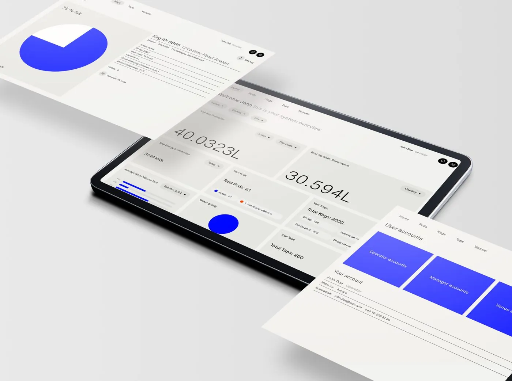
Digital dashboard
Wayout Water
Led the shift to a user-driven dashboard, defining strategy, goals and roadmap for the MVP.
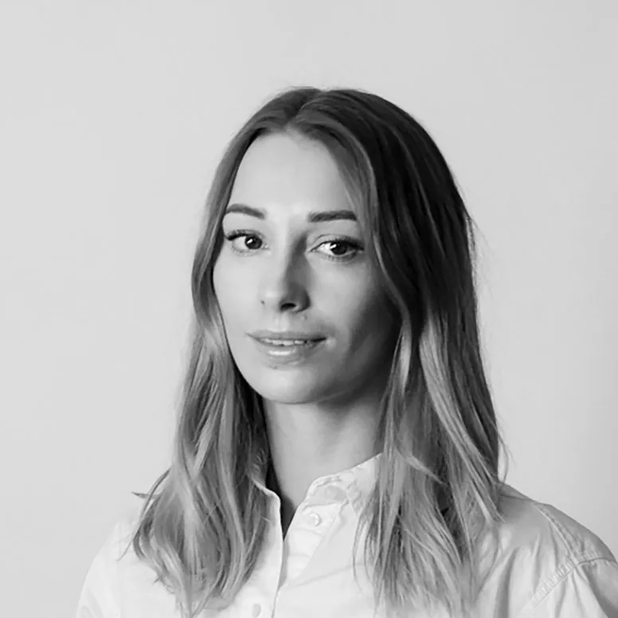
Leading design from strategy to finished product and guiding stakeholders and leadership toward decisions grounded in insights and business value. Responsible for making design carry through the product team, the wider organisation and our external presence, in daily close collaboration with our psychologists.
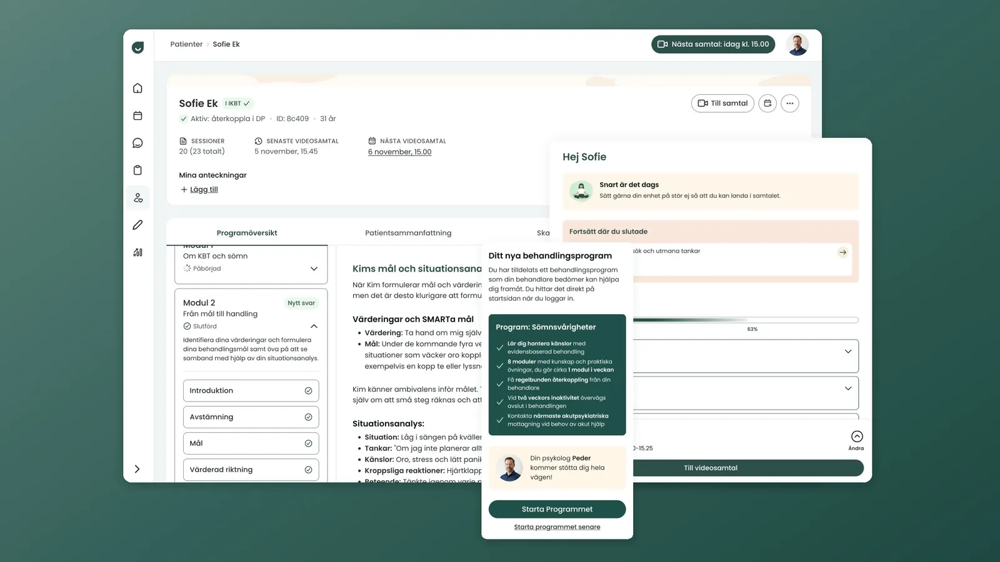
View projectEight iCBT programs moved into our own service and launched within six months.
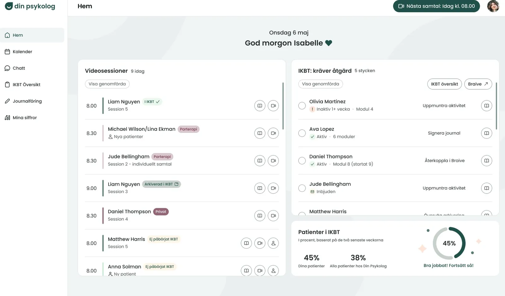
View projectA platform built around a psychologist's working day.
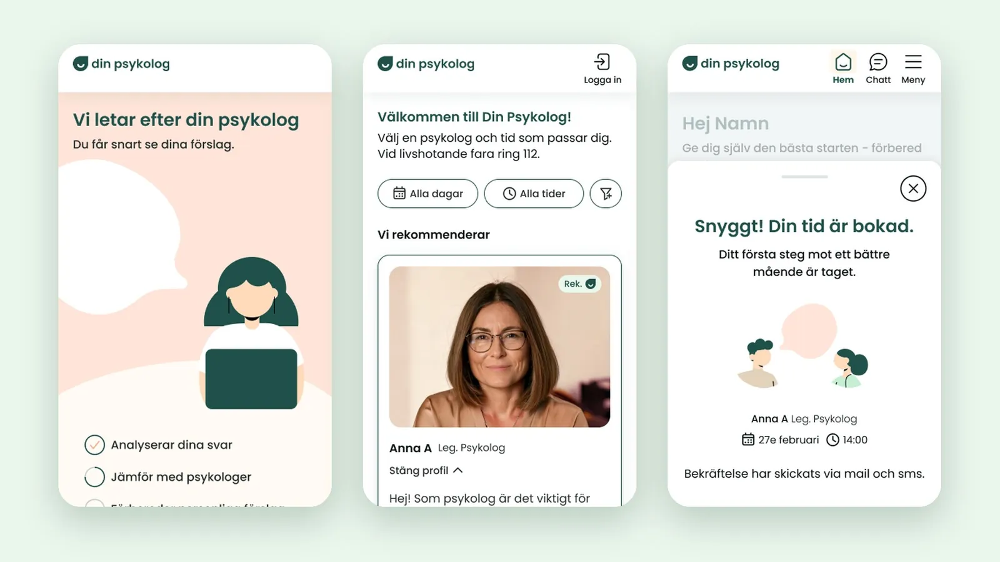
View projectA new patient journey that guides patients through their whole treatment.
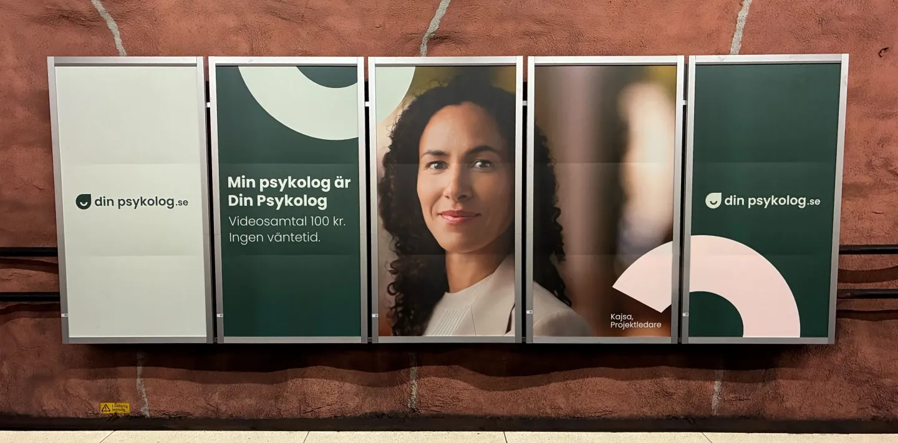
View projectA warm yet professional brand that grew from a visual guideline into a full brand platform.
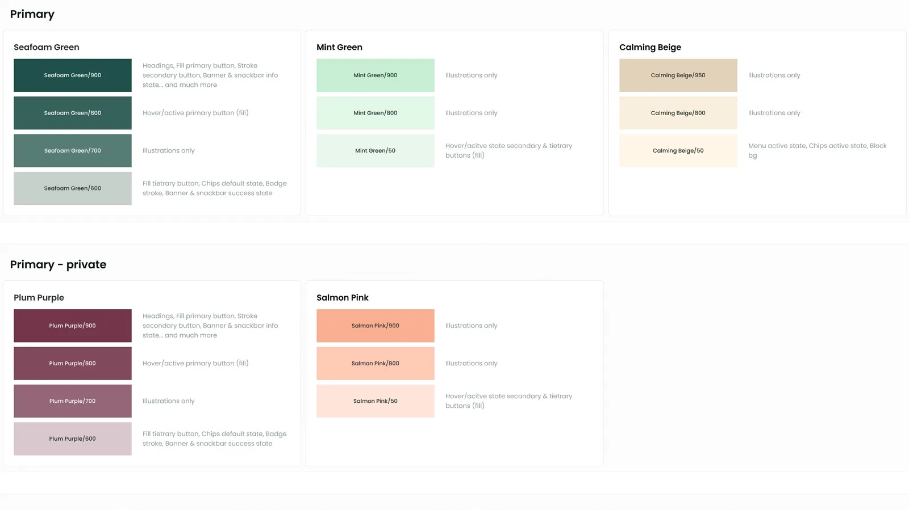
View projectA design practice and a shared design system, built step by step from scratch.
Design thinking is the foundation. From there the method is adapted to the type of project, the time available and what we want to achieve. What never changes is working from insights, whether they come from interviews, data or a quick test.
Pick a situation and see how the weight shifts.
Service, UX and UI design, from user research to hi-fi designs, always connecting business value with user needs.

Led the shift to a user-driven dashboard, defining strategy, goals and roadmap for the MVP.
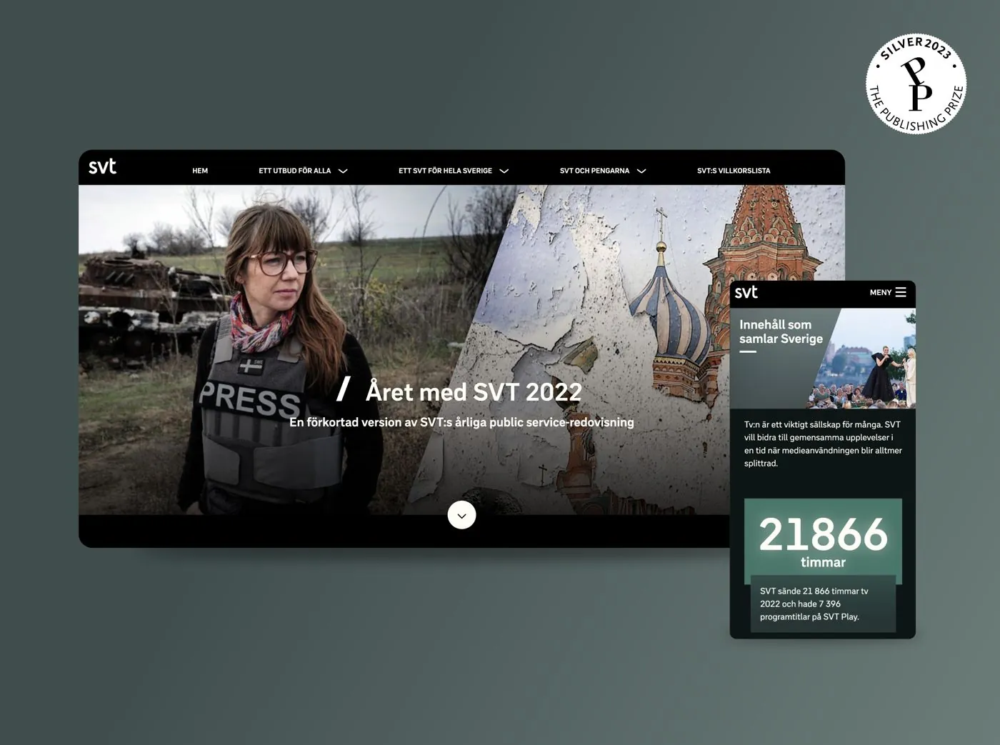
The interactive public service report, with a new menu and user flow through quick Lean UX iterations.
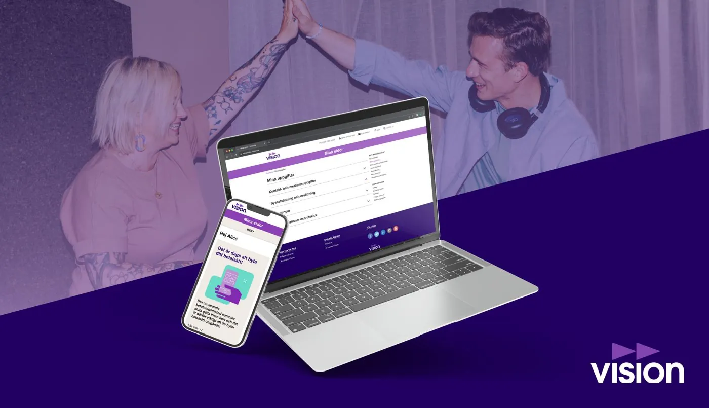
A rebuilt member portal for the union, with simpler flows that took load off customer service. Design lead for the team.
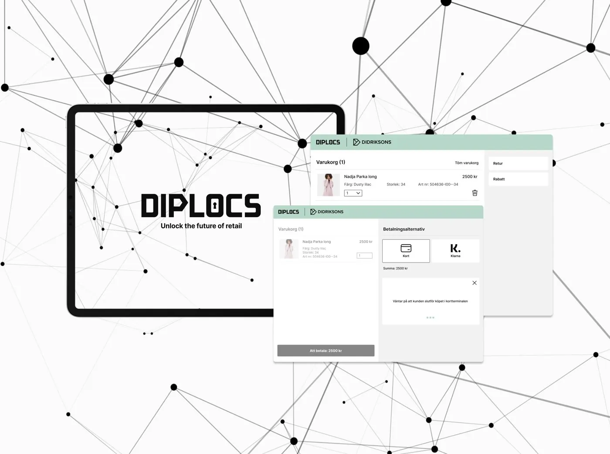
A new white label payment service linking store and e-commerce, built from scratch with its own design system and an extended visual identity.
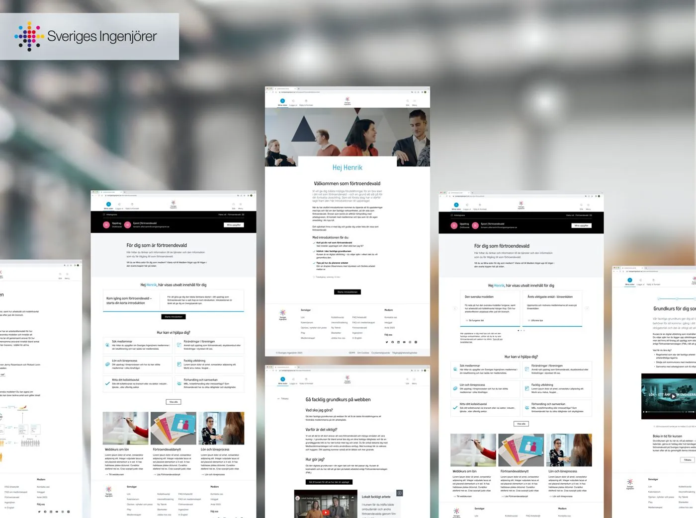
A digital service helping new union representatives get started, built through interviews, concepts and usability tests.
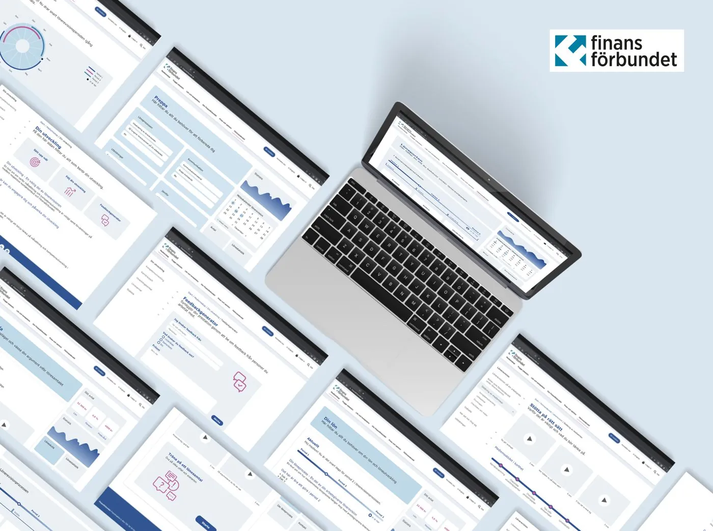
Member research that turned into customer journeys and a clear direction for new digital services.
Senior product designer with a strong sense for both strategy and craft. Taking products from the first why to a shipped solution, guiding stakeholders toward decisions that create real value while still loving the details of the design. Currently designing digital healthcare together with clinicians, with data and AI as a natural part of everyday work.
Design leadership, product strategy, stakeholder guidance, design systems, brand and visual identity, UI design, user research and insights, A/B testing, data-driven decision making, AI workflows and automation, rapid prototyping, accessibility, usability testing
Daily tools include Figma, Claude, PostHog, Linear, Slack and Miro
Swedish, native. English, fluent. Italian, basic.